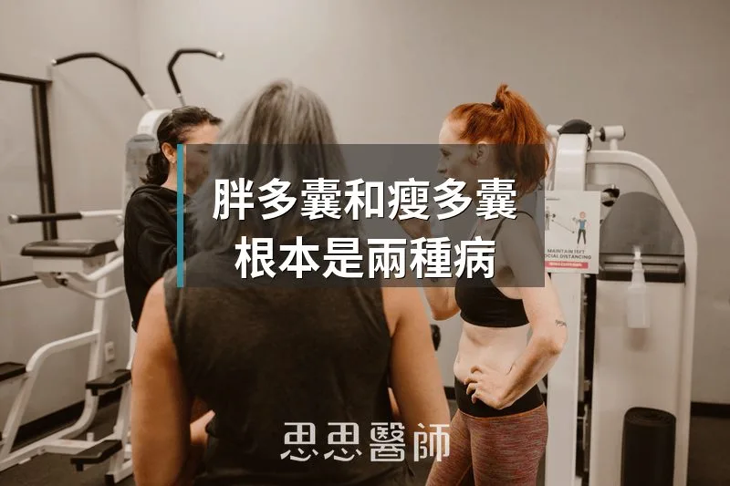

胖多囊和瘦多囊，根本是兩種病

在我的門診裡，多囊性卵巢症候群的病人大概分成兩種樣子。一種是體重偏重、肚子有脂肪、驗血胰島素偏高的；另一種是體型纖細、BMI 完全正常，但月經就是亂、皮膚冒痘、毛髮旺盛。這兩群人用同一套治療邏輯通常只有一群人有效，另一群沒什麼感覺。原因是，胖多囊和瘦多囊在功能醫學的眼裡，根本是兩種不同的病，只是名字一樣。
多囊性卵巢症候群的診斷標準是「鹿特丹準則」：月經不規律、雄性素偏高、超音波看到多囊狀卵巢，三項符合兩項就算。但這個診斷框架完全沒有區分體重，導致非常不同的代謝狀況被放在同一個診斷底下，用同一套藥物或補充品處理，效果自然因人而異。
胖多囊的核心驅動力是胰島素阻抗。脂肪細胞、肌肉細胞對胰島素的敏感度下降，胰臟為了維持血糖穩定只好分泌更多胰島素，血中胰島素因此持續偏高。高胰島素對卵巢有直接刺激作用：它會活化卵泡膜細胞，促使卵巢大量分泌雄性素（主要是睪固酮）。同時，高胰島素會抑制肝臟產生「性荷爾蒙結合球蛋白」（SHBG），SHBG 是負責在血液裡抓住雄性素、讓它失去活性的蛋白質。SHBG 低，等於游離的活性雄性素更多，雄性素的效果被放大了。這就是為什麼胖多囊的女性，即使總睪固酮不一定很高，症狀卻往往很明顯。
一份 2025 年發表在《Frontiers in Endocrinology》的統合分析，整合了胖多囊與瘦多囊的代謝和內分泌特徵差異。胖多囊的胰島素阻抗比例接近 93%，HOMA-IR 顯著偏高，血脂異常（三酸甘油酯高、HDL 低）、高血壓也更常見，整體上更接近代謝症候群的輪廓。
瘦多囊的狀況則複雜得多，也更容易被忽略。BMI 正常的女性被告知有多囊，醫師和患者往往都會困惑：「你又不胖，怎麼會有多囊？」但研究顯示，即使體重正常，瘦多囊的女性仍有約 83% 存在某種程度的胰島素阻抗，只是程度比胖多囊輕、比較不容易被傳統空腹血糖或 HbA1c 抓到，需要用空腹胰島素或 HOMA-IR 才能發現。
瘦多囊的雄性素來源和胖多囊不太一樣。胖多囊的雄性素主要來自卵巢（被高胰島素驅動的卵泡膜細胞），而瘦多囊有更高比例的女性，雄性素來自腎上腺，表現在 DHEA-S（脫氫異雄固酮硫酸鹽）偏高，而睪固酮不一定明顯升高。腎上腺雄性素和壓力荷爾蒙共用同一條路徑，這也解釋了為什麼瘦多囊的女性，症狀往往在壓力大、睡眠差時明顯惡化。
另一個瘦多囊的典型特徵是 LH/FSH 比值偏高。促黃體素（LH）偏高、卵泡刺激素（FSH）相對偏低，導致卵泡無法正常成熟排卵，但不斷受到 LH 的刺激分泌雄性素。一項 2024 年發表在《Scientific Reports》的路徑分析研究，重新梳理了瘦多囊中 LH/FSH 比值升高的機轉，確認這個比值在瘦多囊的女性中比胖多囊更為顯著，且與 GnRH 脈衝頻率加快有關，背後牽涉到 kisspeptin 神經元的失調。
治療方向的差異，從這些機轉的差異就可以直接推導出來。
胖多囊的治療核心是降胰島素。低碳水飲食（不需要極端生酮，但精製澱粉和糖要大幅減少）是第一步，配合間歇性斷食讓基礎胰島素水平下降。肌醇是目前在多囊治療上證據最充分的補充品，肌醇中的 myo-inositol（MI）和 D-chiro-inositol（DCI）以 40:1 的比例補充，能改善胰島素訊號傳導，降低雄性素，恢復排卵。小蘗鹼（Berberine）的作用機轉和二甲雙胍（Metformin）類似，對胰島素阻抗明顯的胖多囊有很好的輔助效果。阻力訓練也是重要的一環，肌肉是消耗葡萄糖的主力，肌肉量增加能直接改善胰島素敏感性。
瘦多囊的治療邏輯不完全相同，有幾個地方特別需要注意。第一，不要過度限制碳水。嚴格的低碳飲食對腎上腺是一種壓力，長期碳水不足會升高皮質醇，皮質醇升高又會刺激腎上腺分泌更多 DHEA-S，反而讓腎上腺型的雄性素問題惡化。瘦多囊的飲食原則是「穩定血糖」而非「極低碳水」：三餐定時、減少精製糖、蛋白質和脂肪搭配攝取，讓血糖不大起大落。
第二，睡眠和壓力管理的優先順序比胖多囊更高。慢性壓力和睡眠不足直接刺激 HPA 軸（下視丘-腦下垂體-腎上腺軸），讓腎上腺持續處於亢奮狀態，DHEA-S 就難以回落。在臨床上，我遇到不少瘦多囊的患者，飲食和補充品都做了，症狀改善有限，但睡眠修復之後月經開始規律，這不是巧合。
第三，肌醇仍然有幫助，但可能需要較長的時間才看到效果，因為瘦多囊的胰島素阻抗程度本來就比較輕。薄荷茶（Spearmint Tea）有溫和的抗雄性素效果，研究顯示每天兩杯能降低游離睪固酮，適合症狀輕度或不想用藥的患者嘗試。維生素 D 缺乏在多囊患者中非常普遍，兩種類型都需要補充。
說到底，不管是胖多囊還是瘦多囊，都不是單純的婦科問題，而是荷爾蒙調控、代謝系統和壓力反應三個軸線相互影響的結果。功能醫學的介入重點是找到每個人的主要驅動因素，再從那個根源開始調整，而不是對著診斷名稱給一套標準方案。同樣叫做多囊，需要的可能完全不同。
（本文由我規劃架構與觀點，並協同 AI 校正與潤飾語句）
 空腹小雞跟思思醫師一起斷食，順便養一隻小雞來養小雞 →
空腹小雞跟思思醫師一起斷食，順便養一隻小雞來養小雞 →
好朋友週信
一週一封：《健康駭客週報》這集的研究重點，加上家醫專欄這週的新文章。免費，隨時可以退訂。
延伸閱讀

尿酸高，不只是吃出來的
胰島素升高會抑制尿酸排出、促進重吸收，使尿酸與代謝症候群密切關聯，所以即使飲食克制，胰島素沒控制好尿酸還是難以降低。

粒線體失能的真相
粒線體問題是數量不足加燃料過量的容量問題，而非構造損傷，運動與低碳飲食可增加粒線體數量與調整代謝負載。

很低的 LDL，也是要找原因
沒有使用降脂藥物但 LDL 仍低於 50 mg/dL 需要往下追，可能反映甲狀腺亢進、肝功能受損或惡性腫瘤等潛在疾病。